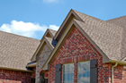
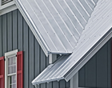
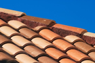

Fort Collins Roof Types
Kessler Roofing, Inc. is a professional Fort Collins roofing contractor that services all types of residential and commercial roofing. We also provide a beautiful selection of various roofing products for your new roof or roof replacement project, including asphalt roofing shingles, metal roofing, tile roofing, and flat roofing solutions.
Roof Types We Service & Provide in Fort Collins
Asphalt Shingles
Asphalt shingles are a popular and common roofing material used in the Fort Collins, Utah area. Roofing shingles are an economical choice for homeowners and businesses looking for a roof type that is durable and lasting and comes in a variety of colors and styles, too. [...] Read More
Metal Roofing
Looking for a more durable alternative to roofing shingles? While checking out the other roof types, be sure to consider our metal roofing options. Metal roofs provide an excellent alternative to traditional roofing for both residential and commercial properties. Metal roofing now comes in a variety of attractive colors and finishes, too, providing more versatility and aesthetic appeal. [...] Read More
Tile Roofs
Tile roofing is hard to beat in terms of beauty and longevity, but without expert care and installation, even the prettiest tile roofs can provide home and business owners with major problems. The roofers at Kessler Roofing, Inc. have the experience to ensure your tile roofs are installed properly and that the necessary structural support is present for long lasting results. [...] Read More
Flat Roofing
When it comes to flat roofing, you need a experienced Fort Collins roofing contractor that understands all the issues and special care that flat roofs require. At Kessler Roofing, Inc., our roofers have the skills and tools to ensure your flat roofs are taken care of properly. From expert construction and installation to flat roofing repairs, our team will ensure your flat roofs are serviced to perfection. [...] Read More